Contents
MyMainScript
tic;
Setting global data
curDir = pwd;
Input files
inp_imgFil_1 = fullfile(curDir, '..', 'data', 'barbara.png');
inp_imgFil_2 = fullfile(curDir, '..', 'data', 'TEM.png');
inp_imgFil_3 = fullfile(curDir, '..', 'data', 'canyon.png');
Output files
out_imgFil_1_a = fullfile(curDir, '..', 'images', '2a', 'barbara_out.mat');
out_imgFil_2_a = fullfile(curDir, '..', 'images', '2a', 'TEM_out.mat');
out_imgFil_3_a = fullfile(curDir, '..', 'images', '2a', 'canyon_out.mat');
out_imgFil_1_b = fullfile(curDir, '..', 'images', '2b', 'barbara_out.mat');
out_imgFil_2_b = fullfile(curDir, '..', 'images', '2b', 'TEM_out.mat');
out_imgFil_3_b = fullfile(curDir, '..', 'images', '2b', 'canyon_out.mat');
out_imgFil_1_c_5 = fullfile(curDir, '..', 'images', '2c', 'barbara_out_5.mat');
out_imgFil_2_c_5 = fullfile(curDir, '..', 'images', '2c', 'TEM_out_5.mat');
out_imgFil_3_c_5 = fullfile(curDir, '..', 'images', '2c', 'canyon_out_5.mat');
out_imgFil_1_c_20 = fullfile(curDir, '..', 'images', '2c', 'barbara_out_20.mat');
out_imgFil_2_c_20 = fullfile(curDir, '..', 'images', '2c', 'TEM_out_20.mat');
out_imgFil_3_c_20 = fullfile(curDir, '..', 'images', '2c', 'canyon_out_20.mat');
out_imgFil_1_c_50 = fullfile(curDir, '..', 'images', '2c', 'barbara_out_50.mat');
out_imgFil_2_c_50 = fullfile(curDir, '..', 'images', '2c', 'TEM_out_50.mat');
out_imgFil_3_c_50 = fullfile(curDir, '..', 'images', '2c', 'canyon_out_50.mat');
out_imgFil_1_d_7 = fullfile(curDir, '..', 'images', '2d', 'barbara_out_7.mat');
out_imgFil_2_d_7 = fullfile(curDir, '..', 'images', '2d', 'TEM_out_7.mat');
out_imgFil_3_d_7 = fullfile(curDir, '..', 'images', '2d', 'canyon_out_7.mat');
out_imgFil_1_d_35 = fullfile(curDir, '..', 'images', '2d', 'barbara_out_35.mat');
out_imgFil_2_d_35 = fullfile(curDir, '..', 'images', '2d', 'TEM_out_35.mat');
out_imgFil_3_d_35 = fullfile(curDir, '..', 'images', '2d', 'canyon_out_35.mat');
Actual Input
inp_im_1 = imread(inp_imgFil_1);
figure('Name', 'Original barbara.png'), imshow(inp_im_1, [0 255]), colorbar, truesize;
inp_im_2 = imread(inp_imgFil_2);
figure('Name', 'Original TEM.png'), imshow(inp_im_2, [0 255]), colorbar, truesize;
inp_im_3 = imread(inp_imgFil_3);
figure('Name', 'Original canyon.png'), imshow(single(inp_im_3)/255, colormap(hsv(255))), colorbar, truesize;
inp_im_3_r = inp_im_3(:,:,1);
inp_im_3_g = inp_im_3(:,:,2);
inp_im_3_b = inp_im_3(:,:,3);
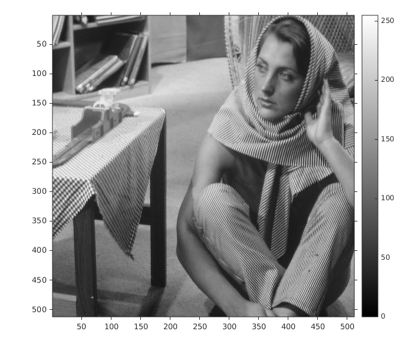 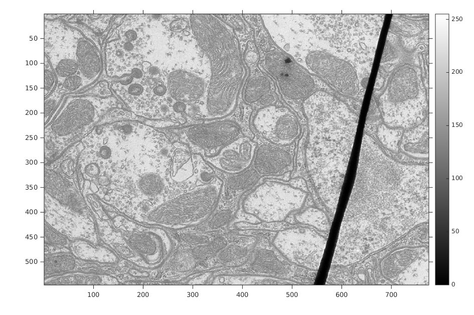 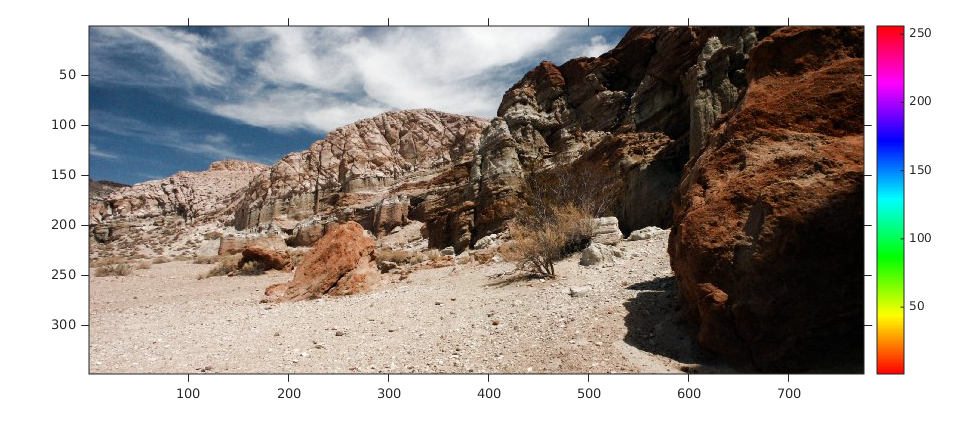
2(a): LinearContrastStretching
out_im_1_a = myLinearContrastStretching(inp_im_1);
figure('Name', 'Contrast-enhanced (Linear contrast stretching) barbara.png'), imshow(out_im_1_a, [0 255]), colorbar, truesize;
out_im_2_a = myLinearContrastStretching(inp_im_2);
figure('Name', 'Contrast-enhanced (Linear contrast stretching) TEM.png'), imshow(out_im_2_a, [0 255]), colorbar, truesize;
out_im_3_r_a = myLinearContrastStretching(inp_im_3_r);
out_im_3_g_a = myLinearContrastStretching(inp_im_3_g);
out_im_3_b_a = myLinearContrastStretching(inp_im_3_b);
out_im_3_a = cat(3, out_im_3_r_a, out_im_3_g_a, out_im_3_b_a);
figure('Name', 'Contrast-enhanced (Linear contrast stretching) canyon.png'), imshow(single(out_im_3_a)/255, colormap(hsv(255))), colorbar, truesize;
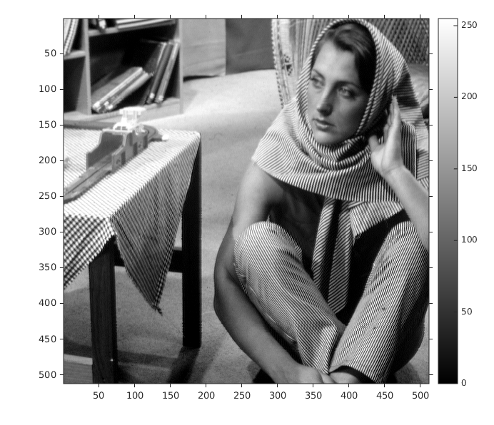 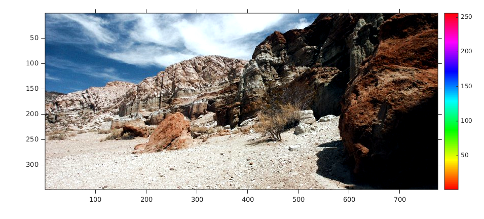
2(b): Histogram Equalization
out_im_1_b = myHE(inp_im_1);
figure('Name', 'Contrast-enhanced (Histogram Equalization) barbara.png'), imshow(out_im_1_b, [0 255]), colorbar, truesize;
out_im_2_b = myHE(inp_im_2);
figure('Name', 'Contrast-enhanced (Histogram Equalization) TEM.png'), imshow(out_im_2_b, [0 255]), colorbar, truesize;
out_im_3_r_b = myHE(inp_im_3_r);
out_im_3_g_b = myHE(inp_im_3_g);
out_im_3_b_b = myHE(inp_im_3_b);
out_im_3_b = cat(3, out_im_3_r_b, out_im_3_g_b, out_im_3_b_b);
figure('Name', 'Contrast-enhanced (Histogram Equalization) canyon.png'), imshow(single(out_im_3_b)/255, colormap(hsv(255))), colorbar, truesize;
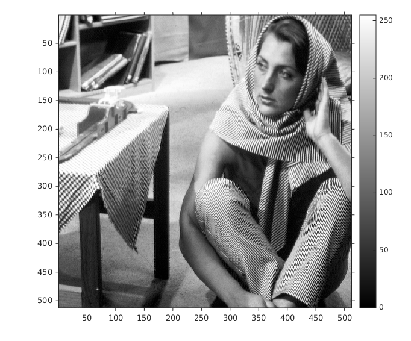 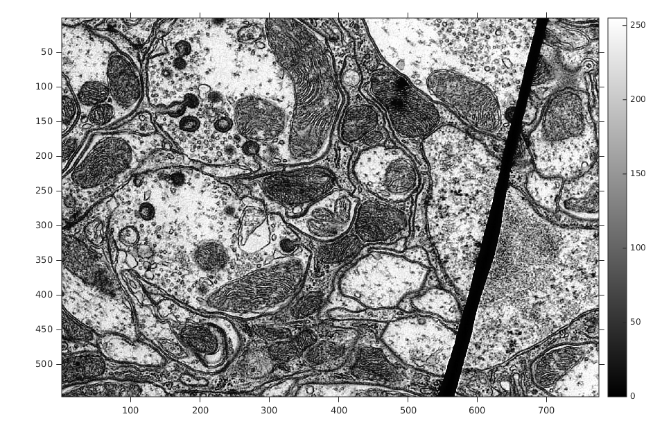 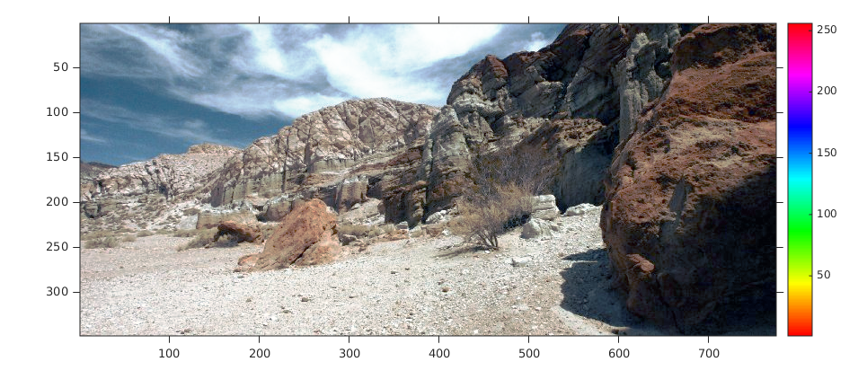
2(c): Adaptive Histogram Equalization
out_im_1_c_20 = myAHE(inp_im_1, 20);
figure('Name', 'Contrast-enhanced (AHE w=41) barbara.png'), imshow(out_im_1_c_20, [0 255]), colorbar, truesize;
out_im_1_c_5 = myAHE(inp_im_1, 5);
figure('Name', 'Contrast-enhanced (AHE w=11) barbara.png'), imshow(out_im_1_c_5, [0 255]), colorbar, truesize;
out_im_1_c_50 = myAHE(inp_im_2, 50);
figure('Name', 'Contrast-enhanced (AHE w=101) TEM.png'), imshow(out_im_1_c_50, [0 255]), colorbar, truesize;
out_im_2_c_20 = myAHE(inp_im_2, 20);
figure('Name', 'Contrast-enhanced (AHE w=41) TEM.png'), imshow(out_im_2_c_20, [0 255]), colorbar, truesize;
out_im_2_c_5 = myAHE(inp_im_2, 5);
figure('Name', 'Contrast-enhanced (AHE w=11) TEM.png'), imshow(out_im_2_c_5, [0 255]), colorbar, truesize;
out_im_2_c_50 = myAHE(inp_im_2, 50);
figure('Name', 'Contrast-enhanced (AHE w=101) TEM.png'), imshow(out_im_2_c_50, [0 255]), colorbar, truesize;
out_im_3_r_c_20 = myAHE(inp_im_3_r, 20);
out_im_3_g_c_20 = myAHE(inp_im_3_g, 20);
out_im_3_b_c_20 = myAHE(inp_im_3_b, 20);
out_im_3_c_20 = cat(3, out_im_3_r_c_20, out_im_3_g_c_20, out_im_3_b_c_20);
figure('Name', 'Contrast-enhanced (AHE w=41) canyon.png'), imshow(single(out_im_3_c_20)/255, colormap(hsv(255))), colorbar, truesize;
out_im_3_r_c_5 = myAHE(inp_im_3_r, 5);
out_im_3_g_c_5 = myAHE(inp_im_3_g, 5);
out_im_3_b_c_5 = myAHE(inp_im_3_b, 5);
out_im_3_c_5 = cat(3, out_im_3_r_c_5, out_im_3_g_c_5, out_im_3_b_c_5);
figure('Name', 'Contrast-enhanced (AHE w=11) canyon.png'), imshow(single(out_im_3_c_5)/255, colormap(hsv(255))), colorbar, truesize;
out_im_3_r_c_50 = myAHE(inp_im_3_r, 50);
out_im_3_g_c_50 = myAHE(inp_im_3_g, 50);
out_im_3_b_c_50 = myAHE(inp_im_3_b, 50);
out_im_3_c_50 = cat(3, out_im_3_r_c_50, out_im_3_g_c_50, out_im_3_b_c_50);
figure('Name', 'Contrast-enhanced (AHE w=101) canyon.png'), imshow(single(out_im_3_c_50)/255, colormap(hsv(255))), colorbar, truesize;
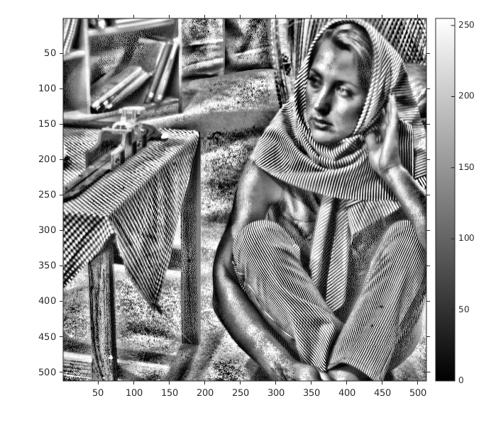 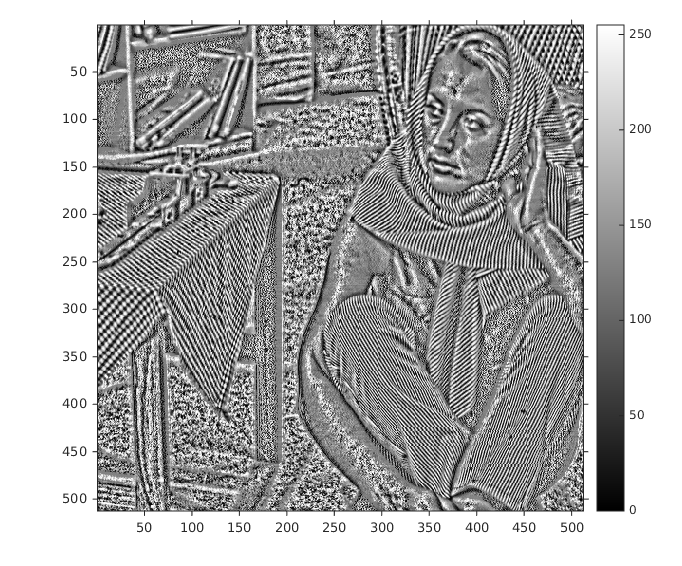 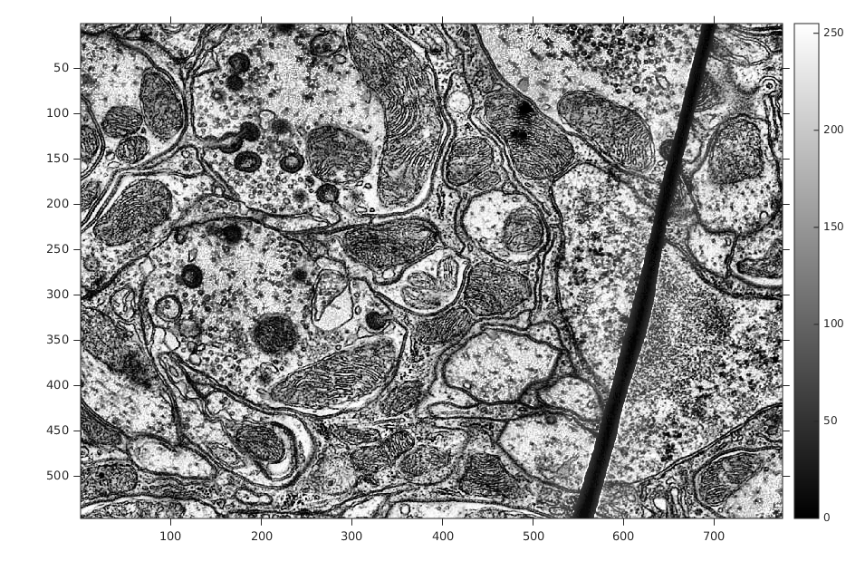 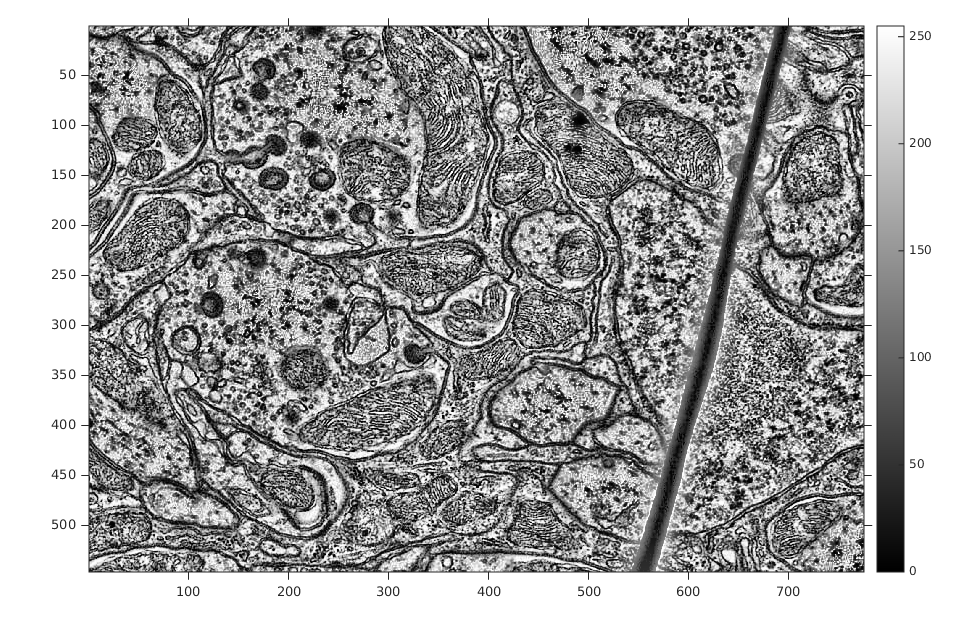 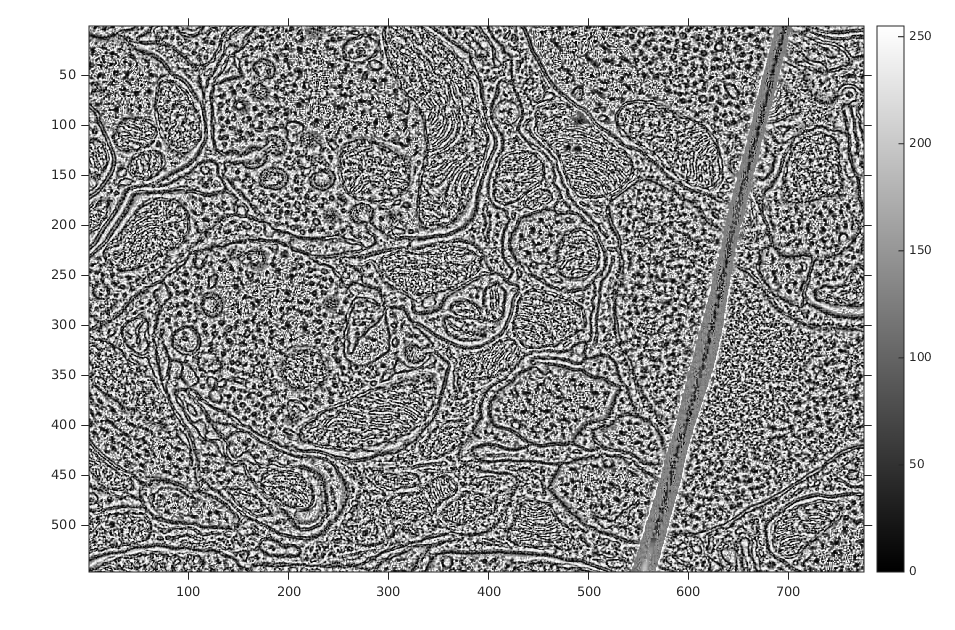 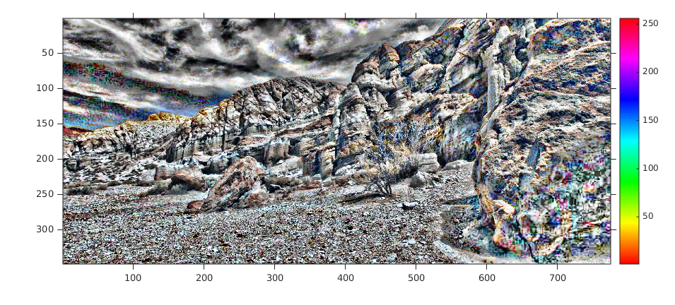 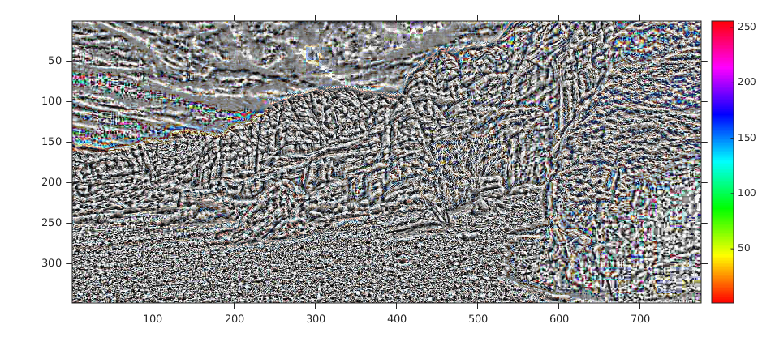 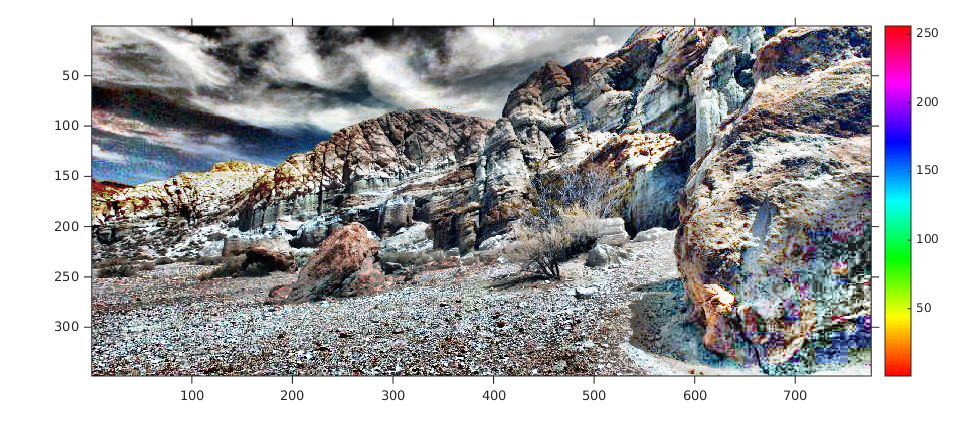
2(d): Contrast-Limited Adaptive Histogram Equalization
out_im_1_d_007 = myCLAHE(inp_im_1, 20, 0.007);
figure('Name', 'Contrast-enhanced (CLAHE threshold=0.007) barbara.png'), imshow(out_im_1_d_007, [0 255]), colorbar, truesize;
out_im_1_d_0035 = myCLAHE(inp_im_1, 20, 0.0035);
figure('Name', 'Contrast-enhanced (CLAHE threshold=0.0035) barbara.png'), imshow(out_im_1_d_0035, [0 255]), colorbar, truesize;
out_im_2_d_007 = myCLAHE(inp_im_2, 20, 0.007);
figure('Name', 'Contrast-enhanced (CLAHE threshold=0.007) TEM.png'), imshow(out_im_2_d_007, [0 255]), colorbar, truesize;
out_im_2_d_0035 = myCLAHE(inp_im_2, 20, 0.0035);
figure('Name', 'Contrast-enhanced (CLAHE threshold=0.0035) TEM.png'), imshow(out_im_2_d_0035, [0 255]), colorbar, truesize;
out_im_3_r_d_007 = myCLAHE(inp_im_3_r, 20, 0.007);
out_im_3_g_d_007 = myCLAHE(inp_im_3_g, 20, 0.007);
out_im_3_b_d_007 = myCLAHE(inp_im_3_b, 20, 0.007);
out_im_3_d_007 = cat(3, out_im_3_r_d_007, out_im_3_g_d_007, out_im_3_b_d_007);
figure('Name', 'Contrast-enhanced (CLAHE threshold=0.007) canyon.png'), imshow(single(out_im_3_d_007)/255, colormap(hsv(255))), colorbar, truesize;
out_im_3_r_d_0035 = myCLAHE(inp_im_3_r, 20, 0.0035);
out_im_3_g_d_0035 = myCLAHE(inp_im_3_g, 20, 0.0035);
out_im_3_b_d_0035 = myCLAHE(inp_im_3_b, 20, 0.0035);
out_im_3_d_0035 = cat(3, out_im_3_r_d_0035, out_im_3_g_d_0035, out_im_3_b_d_0035);
figure('Name', 'Contrast-enhanced (CLAHE threshold=0.0035) canyon.png'), imshow(single(out_im_3_d_0035)/255, colormap(hsv(255))), colorbar, truesize;
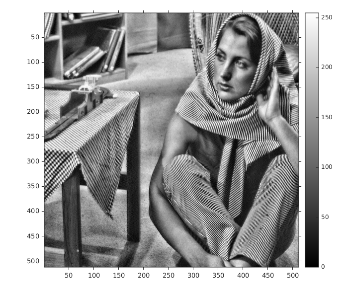 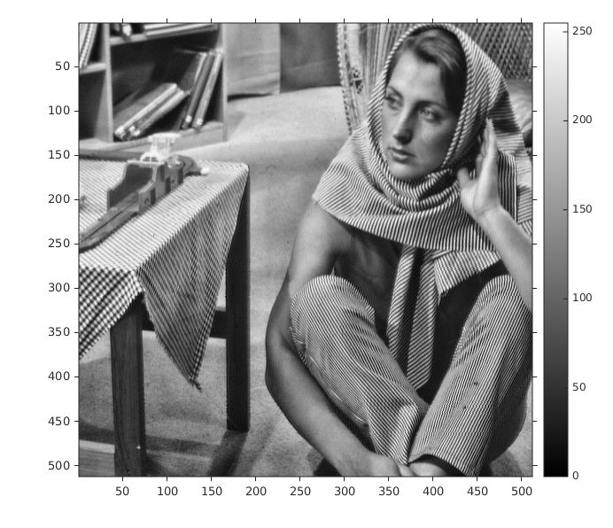 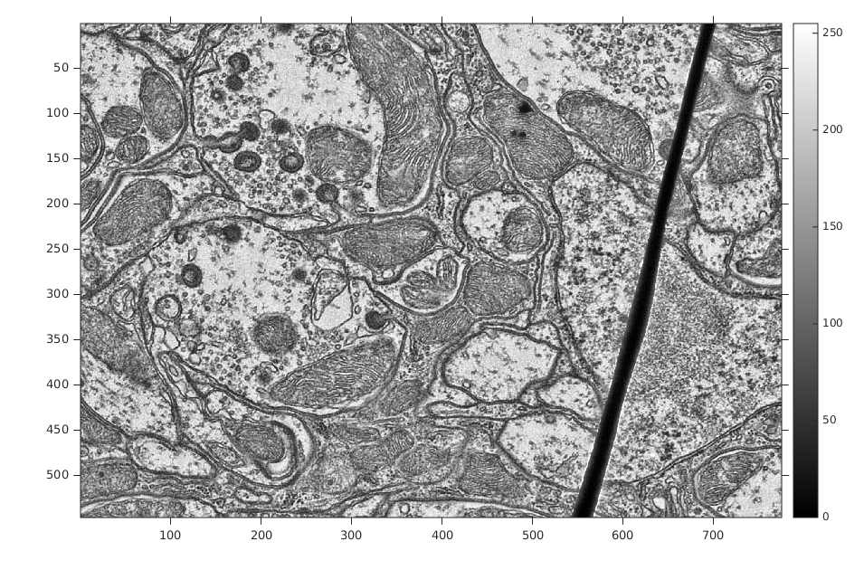 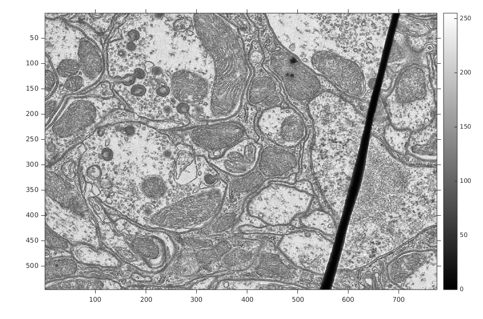 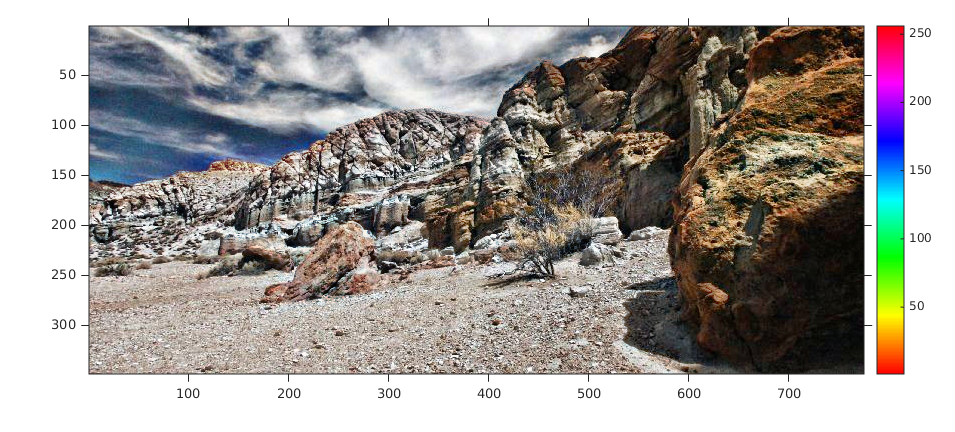 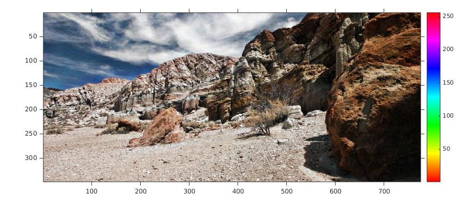
Output
save(out_imgFil_1_a, 'out_im_1_a');
save(out_imgFil_2_a, 'out_im_2_a');
save(out_imgFil_3_a, 'out_im_3_a');
save(out_imgFil_1_b, 'out_im_1_b');
save(out_imgFil_2_b, 'out_im_2_b');
save(out_imgFil_3_b, 'out_im_3_b');
save(out_imgFil_1_c_5, 'out_im_1_c_5');
save(out_imgFil_2_c_5, 'out_im_2_c_5');
save(out_imgFil_3_c_5, 'out_im_3_c_5');
save(out_imgFil_1_c_20, 'out_im_1_c_20');
save(out_imgFil_2_c_20, 'out_im_2_c_20');
save(out_imgFil_3_c_20, 'out_im_3_c_20');
save(out_imgFil_1_c_50, 'out_im_1_c_50');
save(out_imgFil_2_c_50, 'out_im_2_c_50');
save(out_imgFil_3_c_50, 'out_im_3_c_50');
save(out_imgFil_1_d_7, 'out_im_1_d_007');
save(out_imgFil_2_d_7, 'out_im_2_d_007');
save(out_imgFil_3_d_7, 'out_im_3_d_007');
save(out_imgFil_1_d_35, 'out_im_1_d_0035');
save(out_imgFil_2_d_35, 'out_im_2_d_0035');
save(out_imgFil_3_d_35, 'out_im_3_d_0035');
toc;
Elapsed time is 1841.669874 seconds.